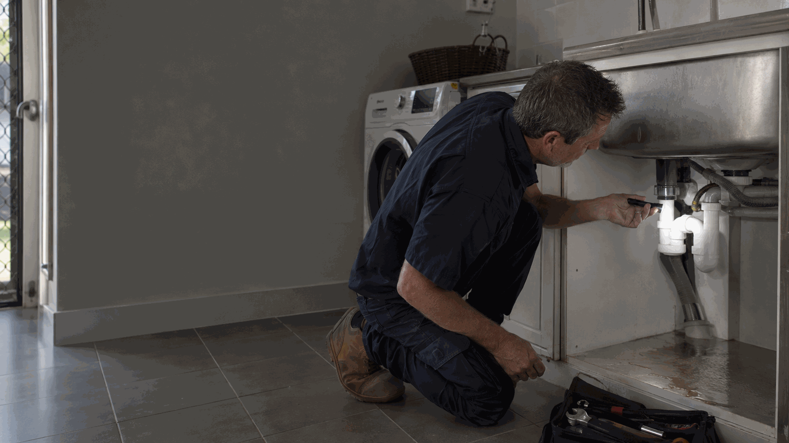

Burst pipe repair
Find related Perth service information and practical guidance.
View Burst pipe repair →Clear, practical help when water is appearing where it should not, a bill changes unexpectedly, or a damp area needs attention.
Call 0413 477 667
A leak is not always visible at the fixture where it starts. Water can travel through cabinetry, walls, ceilings or outside ground before it is noticed. The useful first step is to record where you can see moisture, when it appears and whether the area is growing.
Ellis Services Group can discuss water leak detection and repair requests for Perth homes, apartments, rental properties and commercial premises. If water is near electrical equipment, do not approach or test it. Keep people clear and describe the situation from a safe position.
Send an enquiryFind related Perth service information and practical guidance.
View Burst pipe repair →Find related Perth service information and practical guidance.
View Hot-water problems →Find related Perth service information and practical guidance.
View Guide: reporting a plumbing leak →Yes. Describe the property area, any visible moisture and changes you have noticed. This helps us understand the request before work is arranged.
Include the address, affected room or outdoor area, when the issue began, whether water is active and any safe photos.
Keep clear of the area and do not touch wet electrical equipment. If there is immediate danger, move to safety and call 000.
For managed properties, include the work order, access contact and approval pathway.
Contact Ellis Services Group